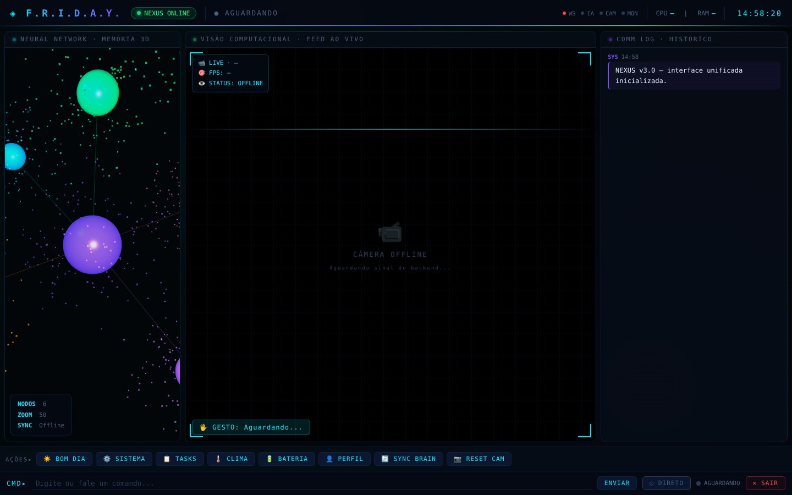
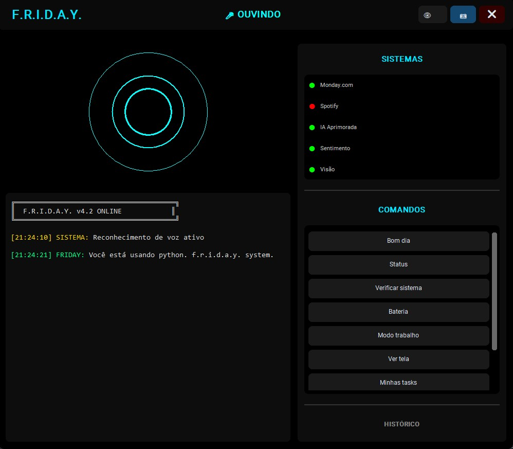
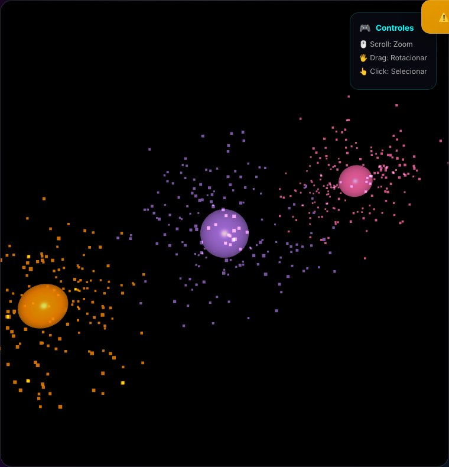

Karen Vasconcelos
CTO e engenheira full stackPython · TypeScript · React · IA aplicada
Construo sistemas com IA que entram em produção e resolvem problemas reais de negócio: licitações, compras, custos de mão de obra e operação. Vim do financeiro e da contabilidade, então entendo a regra antes de escrever o código. Arquiteto, codifico e lidero o time, do primeiro desenho ao deploy.
2 licitações vencidas com um sistema que eu desenvolviA pesquisa de preços foi feita de ponta a ponta na Cotação de Materiais. Ver casoLumo
Em produçãoPlataforma de gestão SaaS multiempresa criada para substituir o Monday.com na operação: quadros e automações, licitações do radar ao pregão, viabilidade de propostas, DP, certidões, financeiro e marketing. Cada módulo é um serviço independente, contratado por empresa.
- Substitui uma ferramenta paga por licença, com os dados e as regras de negócio dentro de casa
- Motor de automações com gatilhos, ações e operadores tipados; toda execução deixa registro
- Isolamento por empresa com teste que varre todas as rotas atrás de vazamento de dados
- Cada módulo é um serviço no próprio container; import entre serviços é barrado por teste
- Licitações: análise de edital por IA, estudo de viabilidade com motor de cálculo a partir das convenções coletivas e copiloto de lances
- Teste de carga, SLO por jornada, revisão de LGPD e deploy documentado com rollback
Cotação de Materiais
Em produçãoAutomatiza a pesquisa de preços de licitações de ponta a ponta: do edital à cesta de preços, com fornecedores respondendo direto pelo WhatsApp e a IA interpretando cada resposta.
- Regras da Lei 14.133 e da IN 65/2021 no código: 3 cotações mínimas, mediana, até 180 dias, descarte só com justificativa
- Webhook resiliente: deduplicação, retomada após reinício e desambiguação de qual rodada o fornecedor respondeu
- Multiempresa, com WhatsApp próprio por empresa e por pessoa
- Módulo de compras: pedido em PDF com alçada, conferência de nota fiscal por IA e exportação para o ERP
- Preço de referência automático via dados abertos do Compras.gov.br
F.R.I.D.A.Y.
Projeto pessoalAssistente pessoal inspirada no Jarvis que ouve, vê, lembra e age no computador, com o modelo de linguagem rodando localmente, sem depender da nuvem.



- Conversa por voz com Llama 3.1 local, transcrição offline (Whisper) e voz neural em português
- Memória de longo prazo com RAG: conversas, fatos, preferências e tarefas por busca semântica
- Controle por gestos (pinça, punho e apontar) para mover janelas entre monitores
- Reconhece o app ativo e analisa a tela para responder com contexto
- Análise de sentimento com histórico, protocolos de rotina e integrações com Monday.com, Spotify e Obsidian
Trajetória
Do financeiro à liderança técnica
Projetos
Agrupados por tema; clique no grupo para recolher ou expandir
Licitações e viabilidade3
Assistentes e agentes de IA6
Automação financeira e de operação6
Pessoais e mobile5
Stack
Liderança e negócio
Contato
Para conversar sobre projetos de automação, IA e produto
- karenvasconcelos27@gmail.com
- linkedin.com/in/karen-ai-dev
- GitHub
- github.com/KaVsDevs